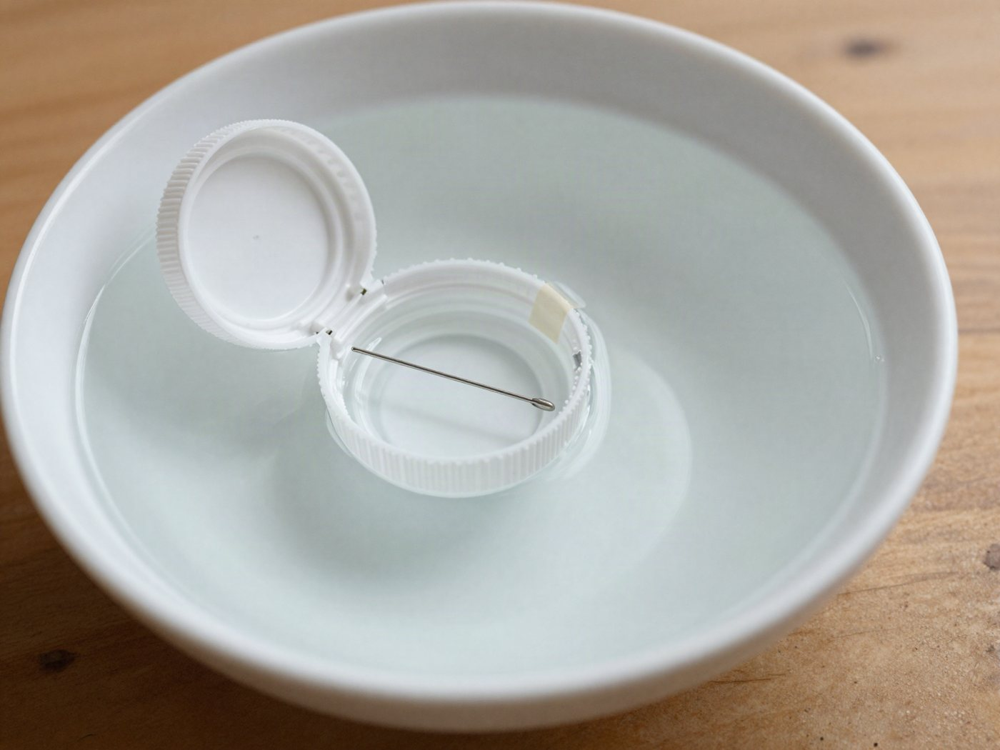

병뚜껑 물 위 나침반

바늘 하나와 병뚜껑으로 북쪽을 찾는 나만의 나침반을 만들어요.
20분 · 난이도 ★☆☆ 쉬움
준비물
- 바늘 1개 — 바느질 바늘. 클립을 곧게 펴서 3cm로 쓰면 더 안전해요.
- 자석 1개 — 막대자석이나 말굽자석. 냉장고 고무 자석은 힘이 약해서 잘 안 될 수 있어요.
- 병뚜껑 1개 — 페트병 플라스틱 뚜껑
- 넓은 그릇과 물 — 국그릇이나 넓은 접시
- 셀로판테이프 — 바늘 고정용
- 확인용 — 스마트폰 나침반 앱, 자석이 됐는지 확인할 클립 1개, 방향 표시용 작은 스티커
만드는 방법
- 바늘을 자석으로 만들기
자석의 한쪽 끝으로 바늘을 바늘귀에서 바늘 끝 방향으로 30번 문질러요. 꼭 한 방향으로만 문지르고, 한 번 문지른 뒤에는 자석을 들어 올려 처음 자리로 돌아가요. - 자석이 됐는지 확인하기
바늘을 클립에 가까이 대 보세요. 클립이 살짝 끌려오면 성공이에요. - 병뚜껑에 붙이기
병뚜껑 안쪽에 바늘을 눕혀 셀로판테이프로 붙여요. 바늘이 뚜껑 한가운데를 지나가게 붙여야 균형이 잘 맞아요. - 물에 띄우기
그릇에 물을 담고 병뚜껑을 가운데에 살며시 띄워요. 뚜껑이 천천히 돌다가 한 방향에서 멈춰요. 맨 위 사진처럼요! - 방향 확인하고 표시하기
스마트폰 나침반 앱으로 북쪽을 확인해요. 바늘의 어느 끝이 북쪽을 가리키는지 작은 스티커로 표시하면 나만의 나침반 완성! 휴대폰은 그릇에서 30cm 이상 떨어진 곳에서 방향만 확인해요.
관찰해 봐요
- 뚜껑을 손가락으로 살짝 돌려 놓으면 어떻게 되나요?
- 자석을 그릇 옆으로 천천히 가져가면 바늘이 어떻게 움직이나요?
- 10번만 문지른 바늘과 30번 문지른 바늘은 무엇이 다른가요?
왜 그럴까?
바늘을 자석으로 문지르면 바늘도 작은 자석이 돼요. 그런데 우리가 사는 지구도 아주아주 큰 자석이에요. 그래서 자석이 된 바늘은 언제나 북쪽과 남쪽을 가리켜요. 물 위에 띄우면 뚜껑이 마음대로 돌 수 있어서 바늘이 스스로 방향을 찾아가요.
학교 교육과정 연결
- [4과09-02] 자석과 자석을 가까이했을 때 나타나는 현상을 관찰하여 그 특징을 자석의 극과 관련지어 설명할 수 있다.
- [4과09-03] 자석을 이용하여 일상생활을 편리하게 하는 장치를 설계할 수 있다.